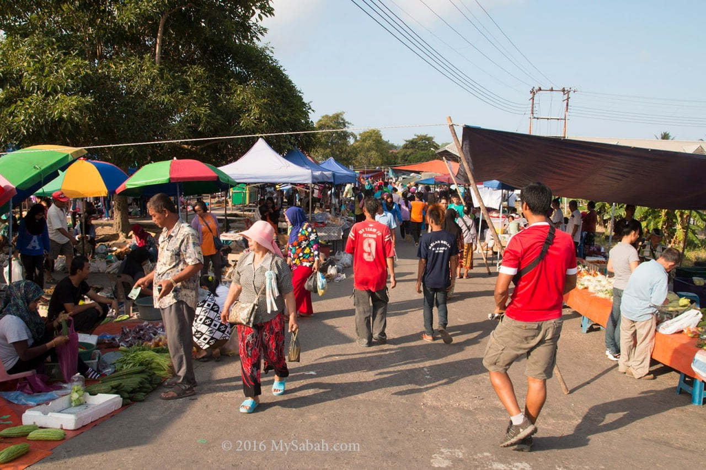
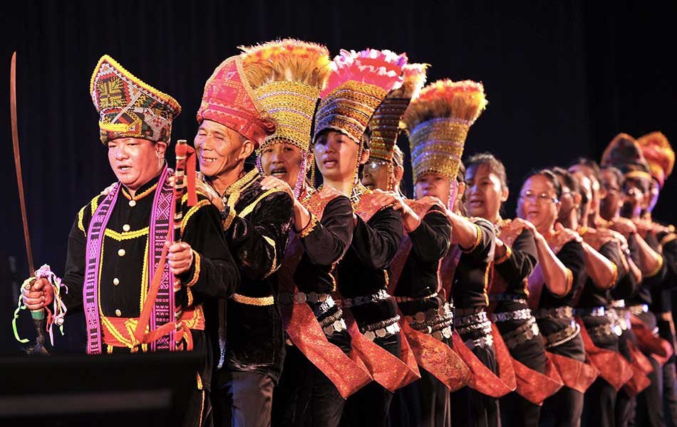
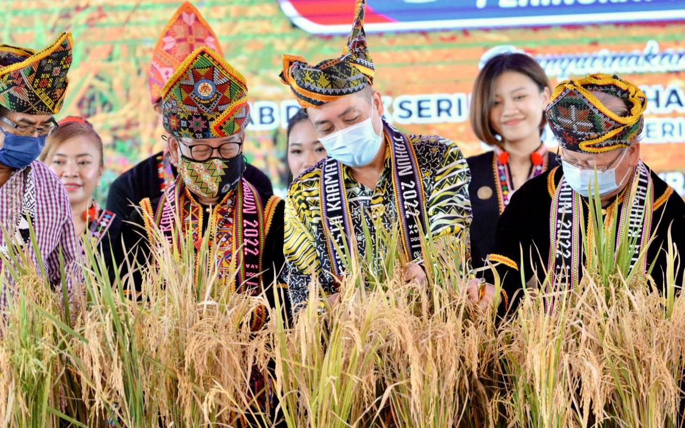
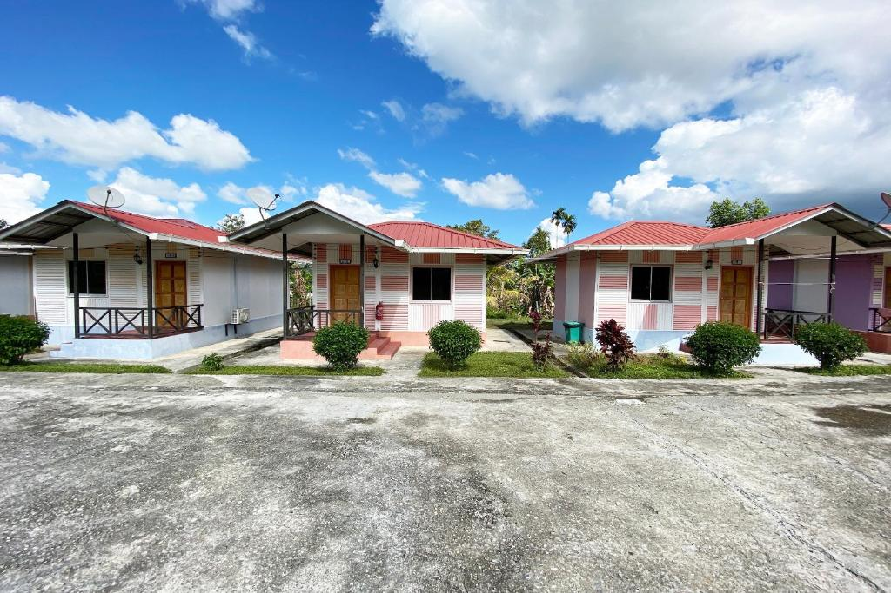
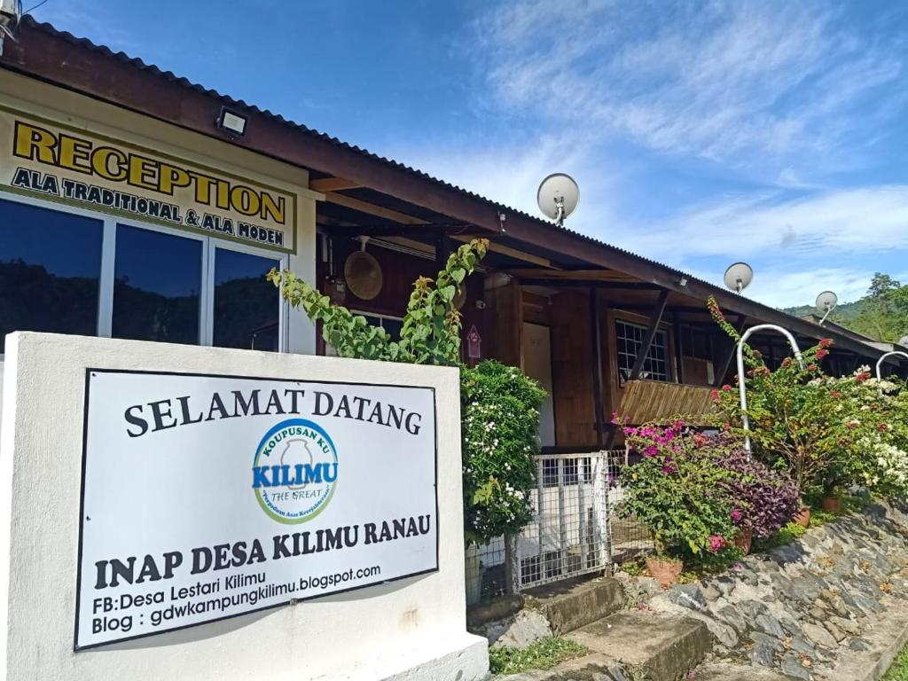
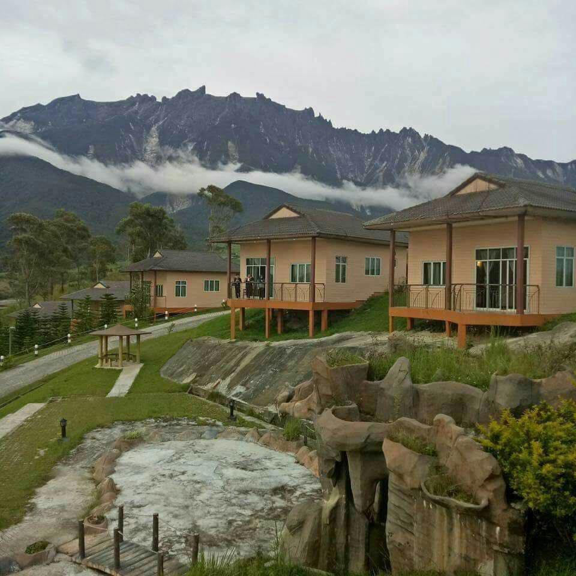
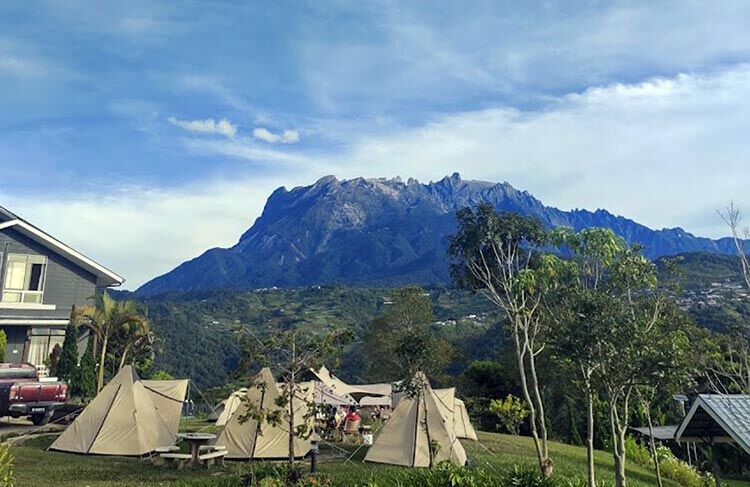

COMMUNITY OF KAMPUNG RANAU, SABAH
The community of Kampung Ranau actively participates in various events and activities that showcase their traditions, customs, and way of life. These events serve as platforms for preserving their cultural identity and fostering a sense of unity among the residents.
PEOPLE
The population of the district was 94,092, an almost entirely Dusun ethnic community.

EVENTS
The community of Kampung Ranau actively participates in various events and activities that showcase their traditions, customs, and way of life. These events serve as platforms for preserving their cultural identity and fostering a sense of unity among the residents.
Ranau Tamu Besar
Tamu Besar is a traditional open-air market where locals gather to trade various goods, including fresh produce, handicrafts, and traditional foods.
Pesta Kaamatan
Pesta Kaamatan is a month-long celebration held in May, which includes various cultural performances, traditional sports competitions, beauty pageants
Magavau
The Magavau ceremony is a ritualistic offering to the rice spirits, expressing gratitude for a bountiful harvest and seeking blessings for the upcoming planting season.
Kampung Ranau is also home to various religious and spiritual events, reflecting the diverse religious practices of its residents. These events include Hari Raya Aidilfitri, the celebration marking the end of Ramadan for the Muslim community, and the Chinese New Year festivities, which bring the local Chinese community together to welcome the Lunar New Year.
ACCOMMODATION
Kampung Ranau in Sabah, Malaysia, offers a range of accommodation options for visitors who wish to experience the village and its surrounding natural attractions. While the village itself is relatively small, there are several nearby options available for those seeking a place to stay.
Homestay
These accommodations are typically simple but comfortable, offering a glimpse into the daily lives of the residents. Homestay hosts often provide meals and organize activities such as village tours and cultural performances.
Guesthouses and Lodges
These establishments are a convenient choice for travelers looking for a bit more privacy and comfort while still being close to the village.
Resorts and Eco-Lodges
Resorts and eco-lodges often emphasize sustainability and may offer nature-based activities like hiking, wildlife spotting, or visits to nearby conservation areas.
Camping
For nature enthusiasts, camping is an option for experiencing the beauty of Kampung Ranau and its surroundings. There are designated campsites available, including the Kinabalu Park area, which is located nearby